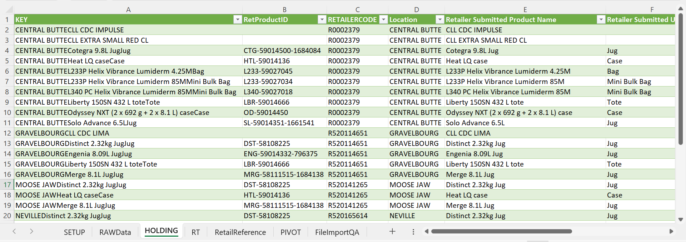

KENNA FALL 2023 WORK TERM REPORT
Thomas Martin
Data Collection & Integration Assistant
September 2023 - December 2023
INTRODUCTION
This work term report is an in-depth overview of my experience as a co-op student during my second work term at Kenna, where I served as a Data Collection & Integration Assistant from September 2023 - December 2023.
ABOUT KENNA
Kenna is a marketing solutions company that aims to deliver a more unified customer experience. Kenna's mission is to help their clients (notably BASF, the largest chemical producer in the world) meet the rapidly changing demands of their customers in less time and effort than it would take on their own. Kenna is a "one-stop-shop" for their clients, with in-house teams such as planning, communications, digital solutions, data collection, and much more.
WORK TERM GOALS
Throughout this work term, I had three main goals -- one of which carried over from my first work term at Kenna. These goals were to enhance my inquiry and analysis skills during the POG reconciliation process, to refine my overall communication skills, and to improve my problem-solving ability by taking on an independent project to help automate and streamline the file import quality assurance (QA) process.
CRITICAL & CREATIVE THINKING - INQUIRY & ANALYSIS
My first goal for this work term was to enhance my inquiry and analysis skills during the POG reconciliation process by investigating and resolving discrepancies. Discrepancies occur when a specific product's processed quantity exceeds/falls below a retailer's reported sales quantity -- I wanted to gain a better understanding of why a discrepancy might occur and use SQL to determine the direct cause of each discrepancy.
Throughout the work term, I was able to learn the root causes behind certain discrepancies and recognize recurring patterns in their occurrences. When our processed quantity fell below a retailer's reported sales quantity, it tended to be because of non-importable/invalid transactions. Inversely, when our processed quantity exceeded a retailer's reported sales quantity, it tended to because of human error, such as importing duplicate transactions or incorrect product mapping.
COMMUNICATING - INTEGRATIVE COMMUNICATION
My second goal for this work term was to refine my overall communication skills. I wanted to articulate our validation process more effectively to retailers, to collaborate seamlessly with colleagues to investigate and resolve discrepancies, and to comprehensively document the validation process for each retailer.
At the start of the work term, I had difficulty explaining our validation process. However, as the work term progressed, I gained a much better understanding of it -- ultimately providing a smoother experience for the retailer. My ability to articulate my thought process whilst investigating and resolving discrepancies also improved, allowing for better collaboration. I made sure to thoroughly document every step of the validation process in order to keep everything accurate and up-to-date.
PROBLEM-SOLVING - FILE IMPORT QA TEMPLATE
My third goal for this work term was to improve my problem-solving ability by taking on an independent project to help automate and streamline the file import QA process. This goal carried over from my first work term at Kenna. The aim for this project was to implement a macro-enabled Excel template that would greatly reduce the amount of manual set-up/processes required for file import QA.
File import QA used to require that the user run several different queries outside of Excel and copy over their results. I worked on embedding these queries natively in Excel. I also implemented a macro which allowed the user to refresh each query under the assumption that a parameter was contained in a certain cell.
Also, file import QA used to require the user to manually create a pivot table based on raw data that they imported. Each pivot table used to be different, given inconsistent formatting across retailers (even within retailers on a file-to-file basis). Implementing a solution for this was relatively simple for retailers with a single location -- I implemented a macro that creates a standardized pivot table under the assumption that the user changes certain column headers to match the column mapping in our database. This was much more difficult for retailers with multiple locations, which required a "Location Name" field within the pivot table. Retailer-submitted location data tended to be wildly inconsistent -- I created a query called "RetailReference" which provided location mapping for standardizing location data. Once this was created, a similar macro was implemented to create a standardized pivot table.

Finally, file import QA used to require that the user manually enter formulas due to variable pivot table formatting. By implementing a standardized pivot table, I was able to automate these formulas.
By nature of the template's implementation, I wasn't able to do rigourous testing. The template was designed in such a manner that raw data conformed to the template, not that the template conformed to raw data. The template's requirements for the user ended up being quite rigid by design, reducing the scope of what I was able to test effectively.
JOB DESCRIPTION & RESPONSIBILITIES
As a Data Collection & Integration Assistant at Kenna, I was responsible for a wide variety of tasks and challenges which often varied on a day-to-day basis.
In the summer months, most of my time was spent doing data mapping, where I mapped product/grower data to our database (which we referred to as "linking"). This required me to think quite heuritically -- it required great attention to detail and the ability to handle missing, duplicate, or contradictory data. I also performed data analysis in the form of quantity/price thresholds, where I examined certain quantities/prices in relation to purchase/price history using SQL. These tasks were consistent throughout both of my work terms at Kenna -- overall, I performed over 5000 data links and evaluated over 2000 data thresholds with 100% accuracy (within the sample size that was tested.)
A subset of these data links and data thresholds required that I make direct communication with retailers/growers via phone/email to retrieve missing data or follow-up on contradictory data. On occasion, my communication with retailers expanded to designated calling campaigns, where I was responsible for gathering information from retailers or relaying information to them.
During the fall months, the majority of my effort was spent doing POG reconciliation -- the process in which every transaction from the 2023 growing season was validated. This involved a lot of investigating and resolving discrepancies, as well as regular communication with retailers to discuss validation and to resolve discrepancies.
RELATION TO ACADEMIC STUDIES
Throughout both of my work terms at Kenna, I have acquired a lot of transferable skills that can be applied to my future studies. I was given the opportunity to take on an independent project, which has certainly improved my ability to use Excel and SQL by a wide margin. My attention to detail as well as my ability to think critically and heuristically has improved dramatically. My collaboration and communication skills are much more refined, and I am much more comfortable with the dynamics/workflow of a professional, collaborative environment.
CONCLUSION
This work term (and both of my work terms as a whole) as a Data Collection & Integration Assistant at Kenna was a great experience. I came away from it with newfound/improved skills in Excel and SQL as well as collaboration, time management, and communication. These skills and experiences will be greatly valuable to me as I move forward in my journey in computer science -- both in school and in the workforce.
ACKNOWLEDGEMENTS
I would like to thank Kenna for giving me the opportunity to spend the last 8 months with them. I would like to thank the Data Collection team -- with special thanks to Shajeah Janjua and Jennifer Charter for providing me with the resources to be successful, their continued support, and their willingness and enthusiasm to answer all of my many questions throughout both of my work terms.